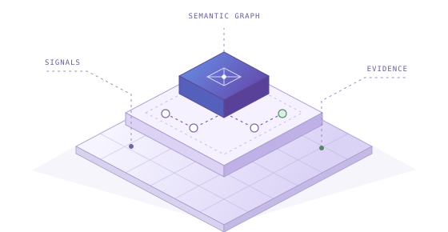
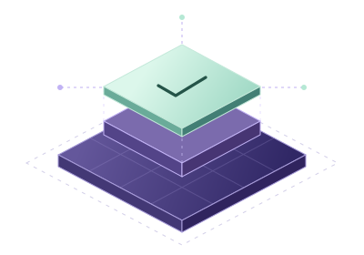

Always-on audit readiness
Keep evidence current and traceable so teams can respond faster to auditors and regulators.
Turn enterprise metadata into a continuously verified view of regulatory posture. Find exposure, prioritize action, and prove closure with evidence.
Built for banks and regulated enterprises
Bring data, ownership, and lineage into one shared view.
Give risk, compliance, and data teams a shared view of what changed, what it affects, and what needs to happen next.
Keep evidence current and traceable so teams can respond faster to auditors and regulators.
Give leadership a clear view of posture, exposure, and priorities across the enterprise.
Validate key controls and evidence over time so weaknesses surface early.
Find control and evidence gaps early and route remediation to the right owner.
Reduce manual evidence gathering and speed up preparation for the next audit.
Assess how new requirements affect systems, owners, and existing controls.
Follow the evidence through five stages, from discovering enterprise data to verifying the fix.
The TruFlow Foundation connects enterprise signals to obligations, controls, owners, and evidence in a shared semantic graph.

Link policies, controls, data, owners, evidence, and actions.
Track quality, freshness, lineage, provenance, runtime behavior, and cost.
Explain what changed, which obligations it affects, and where to act first.
Coordinate approvals, workflows, automation, and service levels.
Revalidate controls and retain evidence of the outcome.
Apply the same enterprise context to compliance, operational assurance, data trust, and technology spend.
Detect regulatory exposure, guide remediation, and verify policy closure with evidence.
Explore RPITurn business activity and control signals into operational compliance insights.
Explore AssuranceFind fit-for-purpose data with clear ownership and validated trust scores.
Explore ContextUnderstand cloud and data spend, spot waste, and improve resource utilization.
Explore OptimizeAnonymized case studies from TruVis across banking and insurance.
Case outcomes as reported by TruVis. Original case studies
Review TruVis’s security, privacy, and compliance documentation in its Trust Vault.
Visit Trust VaultWalk through a regulatory workflow with the TruVis team.
Talk to our team